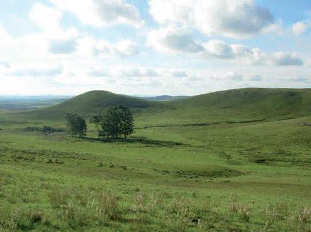

Pradera, Uruguay
Se desarrollan en zonas de clima templado y húmedo.
Carecen casi por completo de árboles y tienen gran cantidad de pastos tiernos y parejos.
Son ideales para el desarrollo de las actividades agrícolas, como cultivos de cereales y oleaginosas, y las actividades ganaderas, por ejemplo, la cría de ganado vacuno.